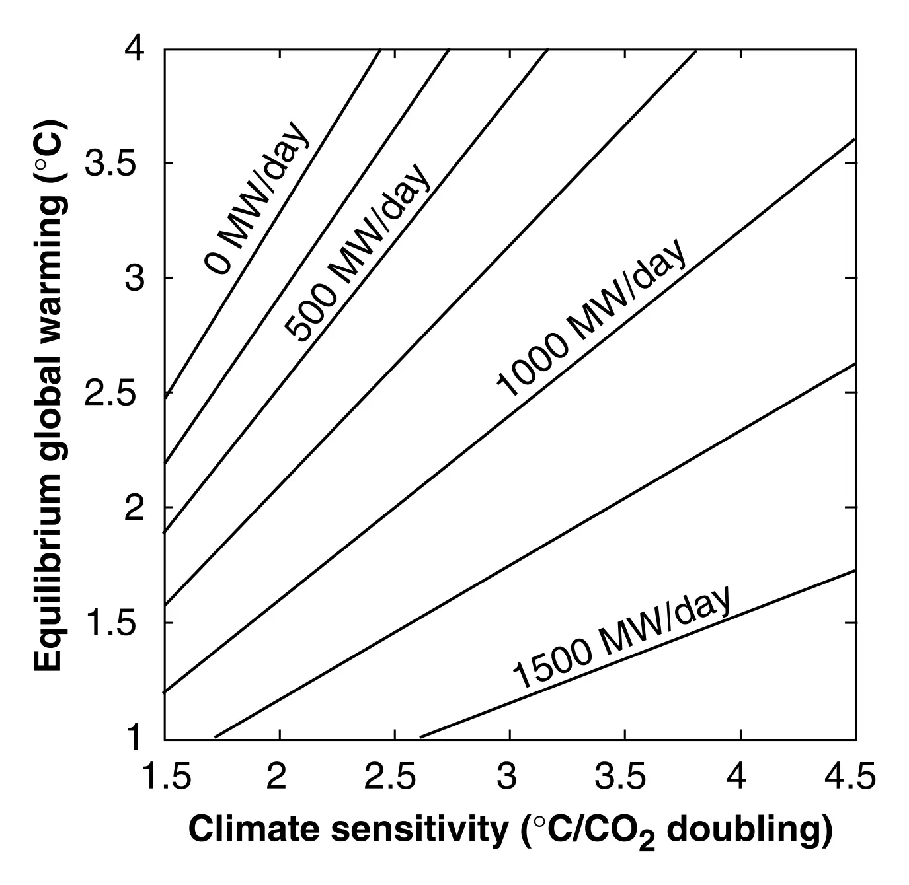

Climate sensitivity uncertainty and the need for energy without CO2 emission
Key finding. A factor-of-three uncertainty in climate sensitivity introduces an even greater uncertainty in the allowable increase in atmospheric CO2 and in allowable CO2 emissions — yet unless climate sensitivity is low *and* the acceptable amount of climate change is high, climate stabilization still requires a massive transition to CO2-emission-free energy technologies.

What question did this research address?
The UN Framework Convention on Climate Change calls for stabilizing greenhouse gas concentrations at a level preventing dangerous interference with the climate system. Acting on that requires knowing what concentration corresponds to a given amount of warming.
The sensitivity of global mean temperature to CO2 was known perhaps only to within a factor of three. This paper asked what that uncertainty does to the allowable emissions implied by a temperature target, and whether the resulting range is wide enough to change what should be done.
What did we find?
Uncertainty is amplified rather than merely transmitted. A factor-of-three range in sensitivity maps onto a wider-than-threefold range in the CO2 concentration consistent with any given temperature target, and wider still in allowable cumulative emissions.
The amplification arises because the allowable emission is a difference between a target concentration and the present one, and taking a difference between two uncertain quantities inflates the relative uncertainty of the result.
Despite that, the policy conclusion is robust across most of the range. Only the joint case where sensitivity turns out low and society accepts a large amount of climate change avoids the need for a massive deployment of carbon-free energy.
The paper was the first peer-reviewed treatment of the carbon-emission-free energy required to meet a temperature stabilization target, with attention to a 2 °C target.
Why does it matter?
The result is an early example of a decision that is insensitive to a large scientific uncertainty. Resolving climate sensitivity would sharpen the emissions budget considerably but would not, across most of its plausible range, change the direction of what has to be built.
That matters for how uncertainty is used in argument. A wide error bar on sensitivity is often offered as grounds for delay; here the same error bar is shown to leave the required action essentially unchanged.
Citation, data, and code
Ken Caldeira, Atul K. Jain, and Martin I. Hoffert (2003). Climate sensitivity uncertainty and the need for energy without CO2 emission. Science 299, 2052-2054.